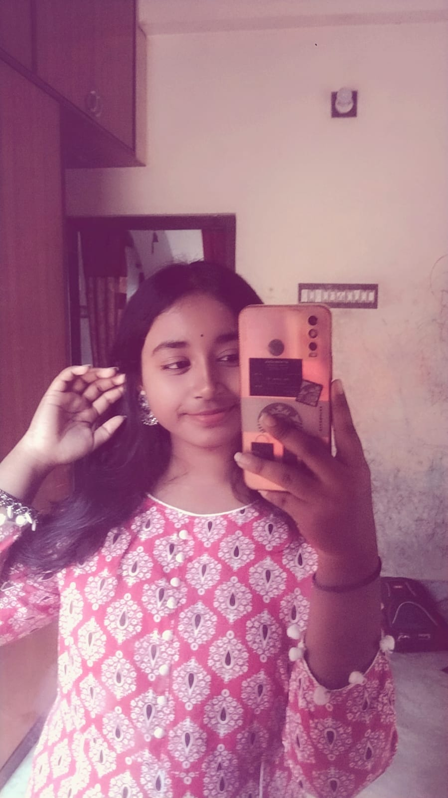
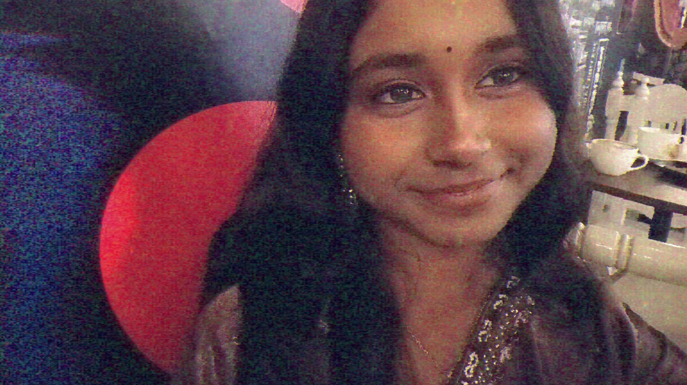
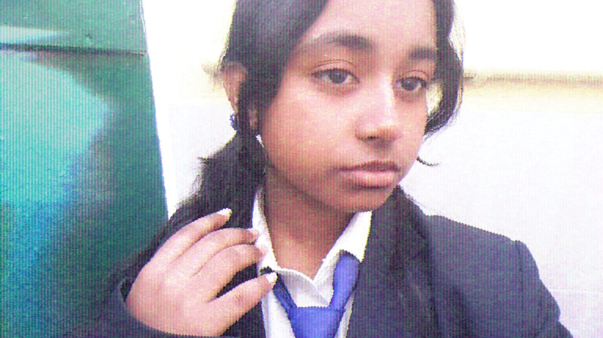
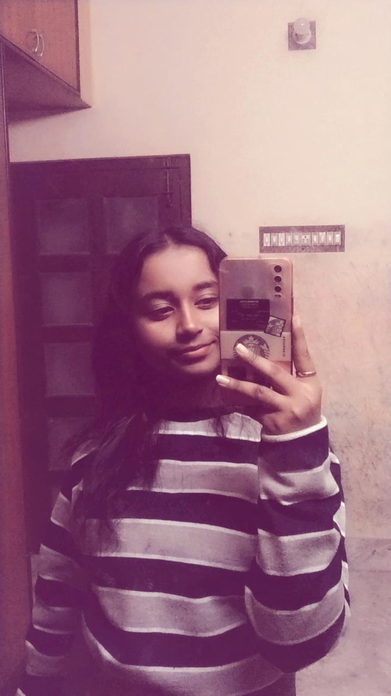
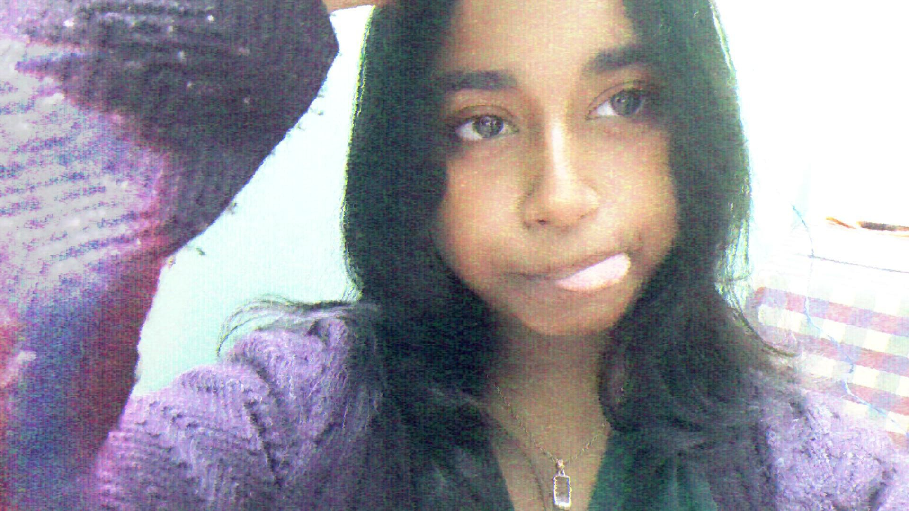

You weren’t supposed to find this.
But I think… I wanted you to.
Some moments feel paused in time.

Like the world got quieter for a second.

This isn't a gallery. It's a collection of smiles.

Unplanned. Unfiltered. Very you.

If this feels unreal… maybe that's because it is special.
Not everything important needs a reason.
Some people just make ordinary days better.

So I kept a few moments. That's all this is.
A small place where time didn’t rush.
— maybe this was a glitch after all.